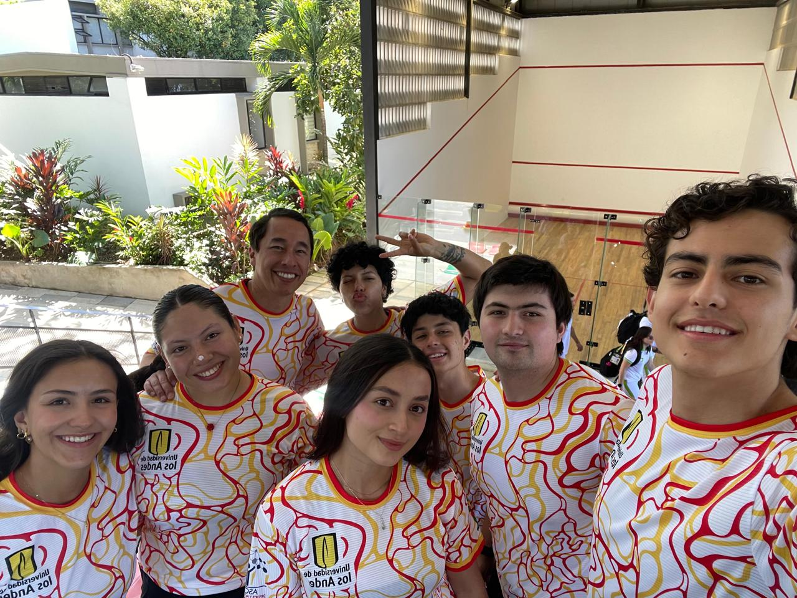

Soy Nicolás Ascencio Marroquín, estudiante de Ingeniería de Sistemas y de Ingeniería Biomédica, actualmente cursando mis estudios en la Universidad de los Andes. Mi formación académica se ha caracterizado por un fuerte interés en la intersección entre la tecnología y la salud, buscando siempre comprender cómo las herramientas computacionales pueden aportar soluciones reales a problemas médicos y sociales. Hago parte activa de la rama IEEE EMBS (Engineering in Medicine and Biology Society), un espacio en el que he podido fortalecer tanto mis conocimientos técnicos como mi capacidad de trabajo en equipo, colaborando en iniciativas que integran la ingeniería con el bienestar humano. Esta experiencia ha sido clave para consolidar mi interés en desarrollar proyectos con impacto significativo en la sociedad. Me considero una persona con aspiraciones grandes, motivado por la idea de generar cambios positivos a través de mis conocimientos y habilidades. Mi objetivo es contribuir al desarrollo de soluciones innovadoras que mejoren la calidad de vida de las personas, especialmente en contextos donde la tecnología puede marcar una diferencia tangible. Como dato adicional, fui jugador de alto rendimiento de squash, una experiencia que me permitió desarrollar disciplina, constancia y resiliencia, cualidades que hoy aplico tanto en mi vida académica como en mis proyectos personales.

Hobbies
En mi tiempo libre disfruto de actividades que combinan lo físico y lo creativo. Soy jugador de squash en la selección de la universidad, lo que me permite mantener disciplina, constancia y un alto nivel competitivo. Además, me gusta caminar, ya que es un espacio en el que puedo despejar la mente y reflexionar. También encuentro en la música una forma importante de expresión: toco el piano como una actividad que fortalece mi concentración y sensibilidad artística, y disfruto escuchar música de distintos géneros, lo cual complementa mis momentos de estudio y descanso.

Aspiraciones
Mis aspiraciones profesionales se centran en integrar la Ingeniería de Sistemas y la Ingeniería Biomédica para desarrollar soluciones tecnológicas que tengan un impacto real en la salud y la calidad de vida de las personas. Me interesa especialmente el diseño de herramientas de diagnóstico asistido por inteligencia artificial, capaces de analizar imágenes médicas y datos clínicos para apoyar a los profesionales de la salud en la toma de decisiones más precisas y oportunas. Asimismo, busco participar en el desarrollo de dispositivos médicos accesibles, como sistemas de monitoreo remoto para pacientes con enfermedades crónicas, que permitan un seguimiento continuo sin necesidad de hospitalización. También me motiva el uso de análisis de datos a gran escala para identificar patrones epidemiológicos y mejorar la gestión de los sistemas de salud, especialmente en contextos con recursos limitados. A largo plazo, aspiro a liderar o formar parte de equipos interdisciplinarios que desarrollen soluciones innovadoras, combinando software, hardware y conocimiento clínico, con el objetivo de cerrar brechas en el acceso a la salud y aportar de manera concreta al bienestar de la sociedad.